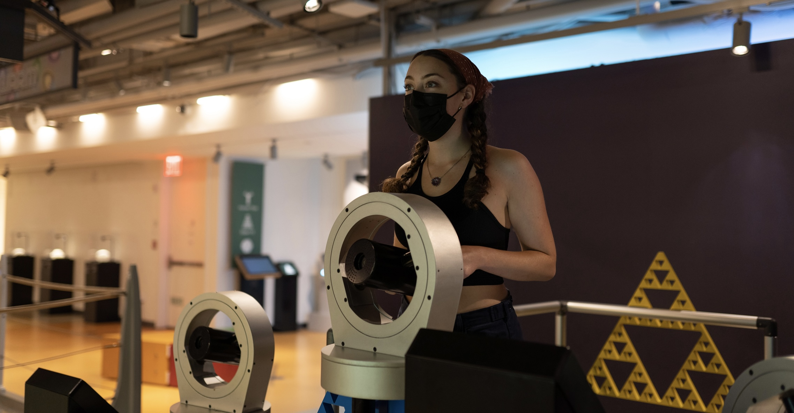

About Me

I am currently a senior at Fordham University, where I have maintained a GPA of 3.7 studying Mathematics and Computer Science. Due to my background in these subjects, it is no surprise that I fell in love with Data Science upon my first exposure to it. My career goal is to utilize my knowledge of mathematics and programming through data science and apply it to the field of astronomy. Currently, I am applying for Data Science Master’s Programs. In the future, I am also interested in pursuing a Ph.D. in either data science or astronomy.
Research Interests: Astronomy, social justice
Research
Automatic Evaluation of Letters of Recommendation in
STEM Master’s Programs >br> For this research, we have created predictive models with natural language processing and machine learning methods to assess gender and racial bias in graduate school letters of recommendation.
I have been contributing to this research paper since June 2022. When it is published in the coming month, I will link it here!
Experience

ROOT Program Participant at the National Museum of Mathematics (May 2022 — August 2022):
- One of eight candidates accepted into the 2022 ROOT (Real Operational Outreach Training) Program
- Communicated with a diverse audience (ages 2-80) the various math concepts behind the exhibits
- Engaged with high-profile mathematicians to gain a deeper understanding of the advanced math displayed throughout the museum
- Worked to make math more accessible to the local community
Research Assistant Fellow at Fordham University (June 2022 — Present):
- Use machine learning methods, including various classification models, to assess gender and racial bias in graduate school letters of recommendation
- Complete 250+ hours extracting, preprocessing, and analyzing a dataset with over 4000 entries
- Contribute findings to a published research paper
- Maintain strong virtual communication with a research team of two professors and two students
Calculus Grader at Fordham University (September 2022 — Present):
- Grade assignments weekly for two calculus classes, each with about 30 students
- Analyze and evaluate various written math solutions to determine their accuracy
- Collaborate with professor to discuss progress of the class and make recommendations
- Gain a deeper understanding of fundamental math concepts
Orientation Leader at Fordham University (August 2022):
- Individually led a group of 18 incoming freshmen in various discussions to help them adjust to college life
- Collaborated with fellow orientation coordinators to create engaging activities for the entire freshmen class
- Facilitated an open discussion about diversity, equity, and inclusion on campus
Contact
Email:
Address: